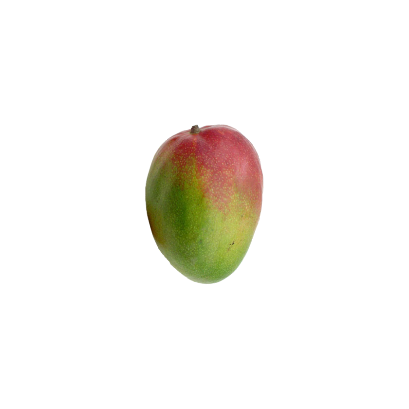

<!DOCTYPE html PUBLIC "-//W3C//DTD XHTML 1.0 Transitional//EN"
	"http://www.w3.org/TR/xhtml1/DTD/xhtml1-transitional.dtd">
<html xmlns="http://www.w3.org/1999/xhtml" xml:lang="fr" lang="fr">
	<head>
		<meta http-equiv="Content-Type" content="text/html; charset=iso-8859-1" />
		<meta http-equiv="Content-Style-Type" content="text/css" />
		<meta http-equiv="keywords" content="R�publique des Mangues, Mangues, mangue" />
		<meta http-equiv="description" content="Site internet officiel de la R�publique des Mangues." />
		<meta property="fb:app_id" content="448467775189418" />
		
		<link rel="icon" href="favicon-small.png" sizes="32x32"> 
		<link rel="shortcut icon" href="favicon.png" type="image/x-icon">
		
		<title>Welcome to peanuts republic !</title>
		<style type="text/css">
		html { width: 100%; height: 100%; }
		body { margin: auto ; background: #FF7918; font-family: Arial, Helvetica, sans-serif; font-size: 12px; color: #292929; width: 100%; height:100%; margin: 0; }
		a, a:link, a:active, a:visited { font-weight: bold; color: #999999; }
		a:hover { color: #0080FF; }
		h1 { text-align: center; font-size: 12px; margin: 0; padding: 0; }
		#awesome { display: none; position: absolute; top: 780px; left: 210px; z-index: 424; }
		#social { position: relative !important; left: 14px !important; z-index: 4242; opacity: 0.5; width: 200px; }
		#social.show { opacity: 1; }
		#social2, .fb-like { display: inline-block; }
		#social2 { position: relative; bottom: 4px; margin: 0; padding: 0; }
		.almosthidden { opacity: 0.2; }
		#highlighter { width: 0px; height: 0px; display: inline; background-image: url(highlighter.png); }
		#social {
			padding: 28px 20px 28px 20px;
			background-repeat: no-repeat;
			overflow: visible;
		}
		#social.social2h {
			background-image: url("highlighter.png");
			background-position: 50% 0%;
		}
		@-webkit-keyframes spin {
		  from {
			-webkit-transform: rotate(0deg);
		  }
		  to {
			-webkit-transform: rotate(360deg);
		  }
		}
		
		@-moz-keyframes spin {
		  from {
			-moz-transform: rotate(0deg);
		  }
		  to {
			-moz-transform: rotate(360deg);
		  }
		}
		
		#fond-mangue {
		  animation-name: spin;
		  animation-iteration-count: infinite;
		  animation-timing-function: linear;
		  animation-duration: 26s;
		  animation-play-state: running;
		  
		  -webkit-animation-name: spin;
		  -webkit-animation-iteration-count: infinite;
		  -webkit-animation-timing-function: linear;
		  -webkit-animation-duration: 26s;
		  -webkit-animation-play-state: running;
		  
		  -moz-animation-name: spin;
		  -moz-animation-iteration-count: infinite;
		  -moz-animation-timing-function: linear;
		  -moz-animation-duration: 26s;
		  -moz-animation-play-state: running;
		}
		</style>
		<script type="text/javascript" src="http://ajax.googleapis.com/ajax/libs/jquery/1.7.2/jquery.min.js"></script>
	</head>
	<body>
		<table width="100%" style="height:100%;">
			<tr>
				<td align="center" valign="middle" style="vertical-align: middle; position: relative;">
					<div style="position: relative; width: 840px; height: 840px; overflow: visible;" id="container">
					<div style="position: relative; width: 840px; height: 840px; overflow: hidden;">
					
					
					<script type="text/javascript">
						document.getElementById('placeholder').style.display='none';
						// noscript equivalent, but bots see the image
						// does not wait for jQuery to be loaded to hide the placeholder
						
						if(document.body.clientHeight < 870 || document.height < 870) {
							document.write('');
							document.write('');
							document.getElementById('container').style.width="672px";
							document.getElementById('container').style.height="672px";
						} else {
							document.write('');
							document.write('');
						}
					</script>
					
					</div>
					
					<script type="text/javascript">
					if(document.body.clientHeight < 870 || document.height < 870) {
							document.getElementById('awesome').style.left='130px';
							document.getElementById('awesome').style.top='620px';
					}
					</script>
					</div>
					<div id="social">
						<div id="highlighter"></div>
						<div id="social2">
							<div class="fb-like" data-href="http://www.republiquedesmangues.fr" data-send="false" data-layout="button_count" data-width="90" data-show-faces="false"></div>
						</div>
					</div>
					<script type="text/javascript">
					  $(function() {
						$("#mangue").hover(
						  function(){
							$("#fond-mangue").addClass("hoverclass");
						  },
						  function(){
							$("#fond-mangue").removeClass("hoverclass");
						  });
						  
						  $("#social2").hover(
                              function(){
                                $("#social").addClass("social2h show");
                                $("#awesome").show();
                              },
                              function(){
                                $("#social").removeClass("social2h show");
                              }
                          );
					  });
					</script>
				</td>
			</tr>
		</table>	
	</body>
</html>